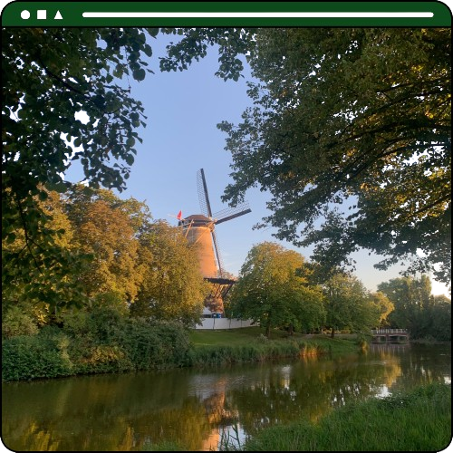

My motivation

I want to study Information and Communication Technology at HZ UAS because:
- I desire to expand my knowledge in the field of ICT and acquire new technical and professional skills;
- I am willing to learn how to develop cutting-edge products and explore the world of technology.
I have a passion for programming and being part of the field of ICT will allow me to contribute to positive changes in society. Moreover, software engineers are given the opportunity to work remotely which provides flexibility in the work environment. I want to achieve my goals in life and I believe that HZ University of Applied Sciences is the first step towards success.